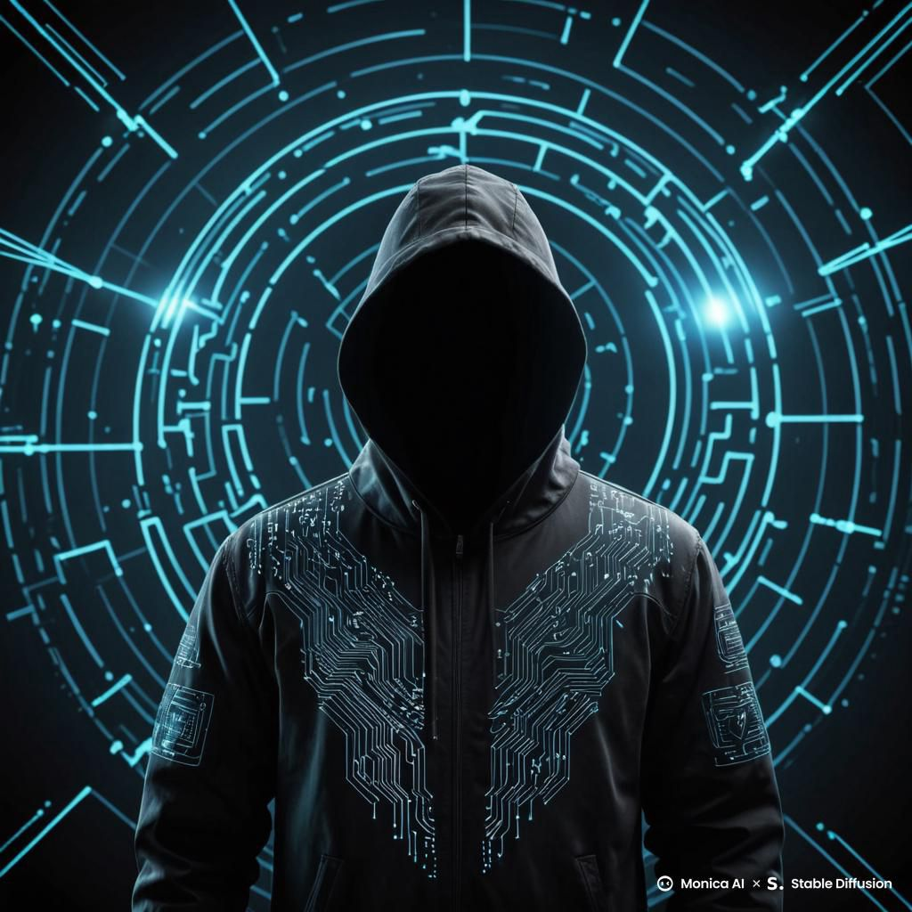
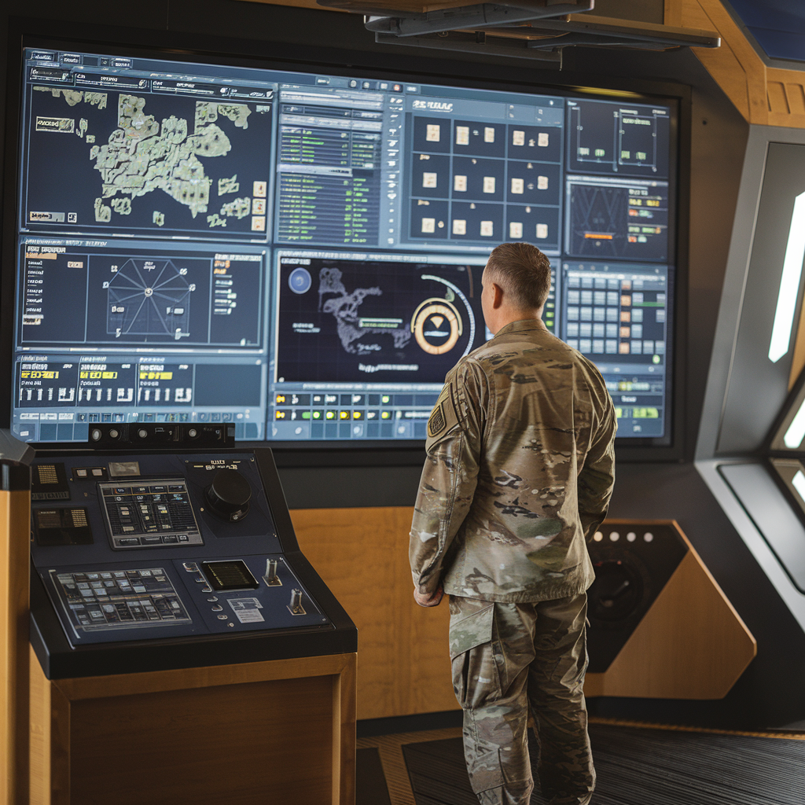
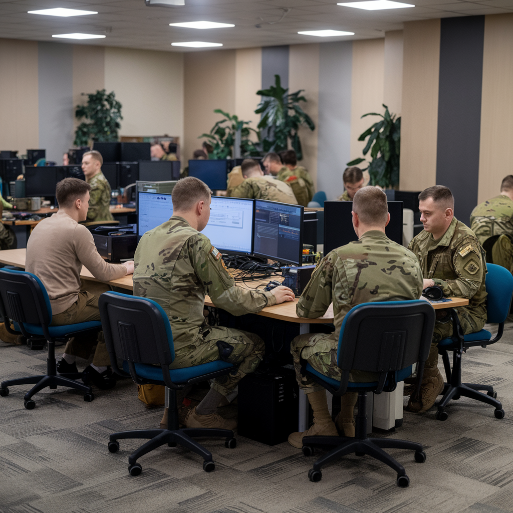

Кібербезпека
Кібербезпека стала ключовим напрямком у сучасних військових діях. Захист інформаційних систем...
Збільшення цифрових даних робить кіберзагрози ще небезпечнішими. Нові методи шифрування та захисту даних стануть критично важливими.
Військові технології

Сучасні військові технології включають безпілотники, супутникові системи, криптографію...
Сучасні військові технології швидко розвиваються, забезпечуючи новий рівень захисту, розвідки та бойових дій. Основні напрямки розвитку включають:
- Штучний інтелект (AI) та автономні системи – дрони-розвідники, безпілотні бойові машини та системи прогнозування загроз.
- Кібербезпека – захист від хакерських атак та використання кіберзброї.
- Гіперзвукова зброя – ракети, що рухаються зі швидкістю понад 5 Махів, здатні проривати сучасні системи ППО.
- Лазерна та електромагнітна зброя – технології спрямованої енергії для знищення повітряних і наземних загроз.
- Біотехнології та екзоскелети – посилення фізичних можливостей солдатів та розробка медичних інновацій.
Розвиток військових технологій змінює глобальні баланси сил, роблячи конфлікти більш високотехнологічними та стратегічними.
Штучний інтелект у війні
ШІ аналізує великі обсяги даних, допомагаючи передбачати загрози, керувати військовими операціями...
Штучний інтелект (AI) кардинально змінює способи ведення бойових дій, покращуючи тактику, логістику та розвідку.
Основні напрямки використання AI у військовій сфері
- Автономні дрони та бойові машини – AI дозволяє дронам самостійно аналізувати цілі, ухилятися від атак і виконувати бойові завдання без втручання людини.
- Розвідка та аналіз даних – алгоритми AI обробляють супутникові знімки, перехоплені комунікації та відео для виявлення потенційних загроз.
- Кібербезпека та інформаційна війна – AI допомагає виявляти кібератаки, запобігати втручанню у військові системи та поширювати дезінформацію.
- Роботизовані солдати та екзоскелети – майбутні AI-системи можуть допомагати солдатам у бою або навіть частково замінювати їх у небезпечних операціях.
- Системи управління та прогнозування – AI допомагає генералам і командирам приймати тактичні рішення, прогнозуючи дії противника.
Етичні та безпекові питання
Розвиток військового AI викликає занепокоєння щодо неконтрольованого використання автономної зброї, можливих збоїв та етичних аспектів ведення війни без участі людини.
Штучний інтелект продовжує відігравати все більшу роль у військових технологіях, змінюючи майбутнє конфліктів та стратегічного планування. 🚀
Захисники України
Українські військові та волонтери активно впроваджують новітні технології у боротьбі за незалежність...
Захисники України – це воїни, добровольці та всі, хто бере участь у боротьбі за незалежність, суверенітет та мир у країні. Вони демонструють відвагу, самопожертву та патріотизм.
Основні категорії захисників
- Збройні Сили України (ЗСУ) – основна військова сила, яка захищає державу від зовнішніх загроз.
- Національна гвардія України – підрозділ, що виконує завдання з охорони порядку та оборони країни.
- Добровольчі батальйони – формування, які з перших днів війни стали на захист Батьківщини.
- Територіальна оборона – громадяни, які захищають свої регіони, виконуючи оборонні та безпекові функції.
- Волонтери та медики – люди, які забезпечують військових необхідним спорядженням, допомагають пораненим та підтримують тил.
Героїзм і самопожертва
Українські захисники щодня ризикують життям заради майбутнього своєї країни. Їхня відвага та незламність є символом національної єдності та сили.
Слава Україні! Героям слава! 🇺🇦
Статистика
Аналітичні дані показують ефективність застосування технологій у військових конфліктах...
Висновки та перспективи
Дані свідчать про зростаючу роль технологій у військових конфліктах, що змінює підходи до оборони та нападу. У майбутньому їхня ефективність буде ще більше вдосконалюватися завдяки розвитку штучного інтелекту та автоматизованих бойових систем.